Biodegradable Propulsion System for AUV Application
Project Overview
Team-based project developing a propulsion system for biodegradable Autonomous Underwater Vehicle (AUV) applications. The project involved designing and prototyping a propulsion system that is environmentally friendly and efficient for underwater exploration and involved developing a pnuematic outgassing system powered by a pressurized fuel cell of hydrogen peroxide and yeast designed by another team and interfaced with our propulsion system. This project was a pre-thesis capstone project in addition to coursework.
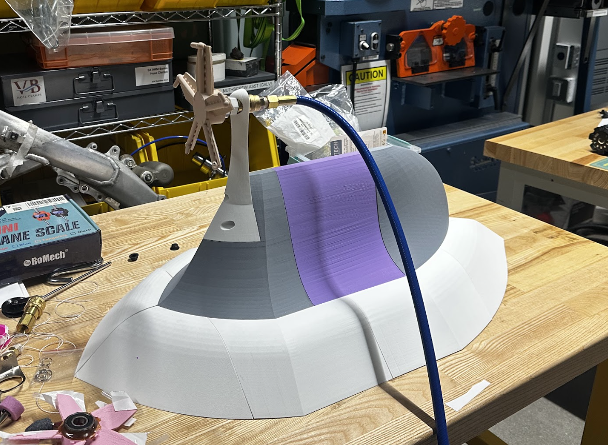
Testing Vessel and Propulsion System Assembly
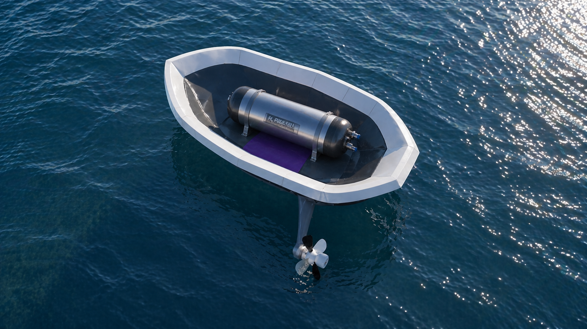
Proof of Concept of Pnuematic Outgassing Propulsion System
H2Pros Final Video
Design Choice & Optimization
In designing our propulsion system, our biggest constraints were designing an outgassing system that could both operate efficiently and effectively while still being adaptable for biodegradable materials in further iteration. This ultimately led us to choose the radial outgassing system for its simplicity, robustness, and better performance under low-pressure conditions. Our propulsion team worked alongside a fuel cell team to integrate the propulsion system with the hydrogen peroxide and yeast-powered outgassing system, which involved developing interface goals in which we determined extended bursts of 20-40psi would create a reasonable, yet still effective thrust output. We then went to work designing a propeller with outgassing channels. Our first iteration had the channels externally attached to the prop, but in further hydrodynamics testing, we found that an integrated approach would be more effective and reduce drag. Additionally, our latest propeller design is much more robust than earlier versions.
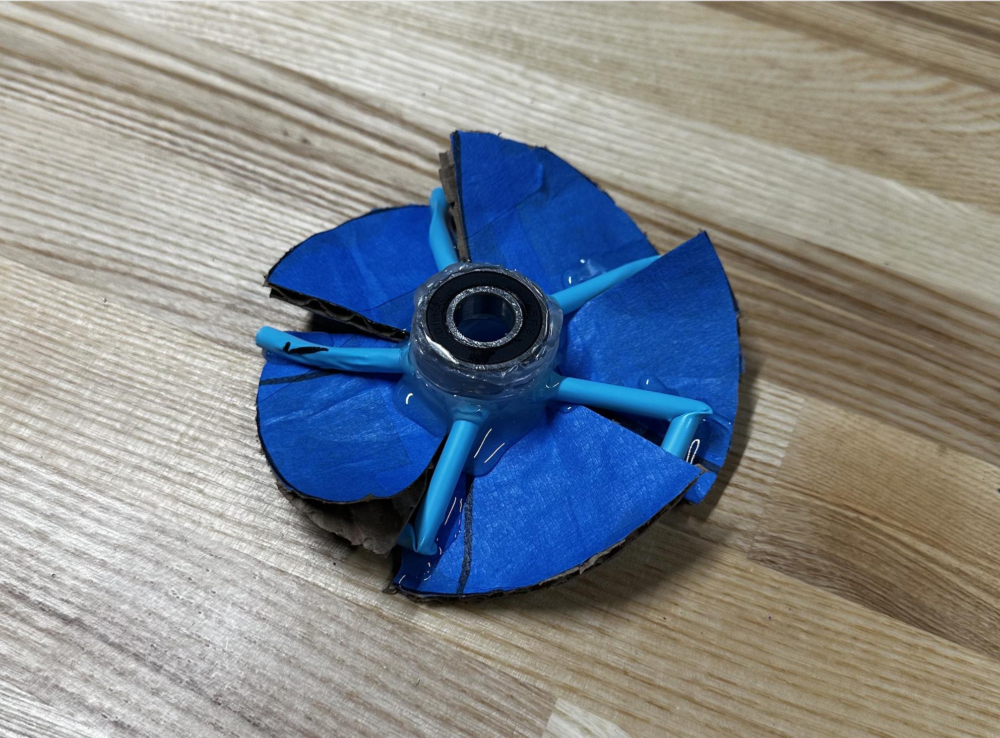
Low-Fidelity V1 Prototype
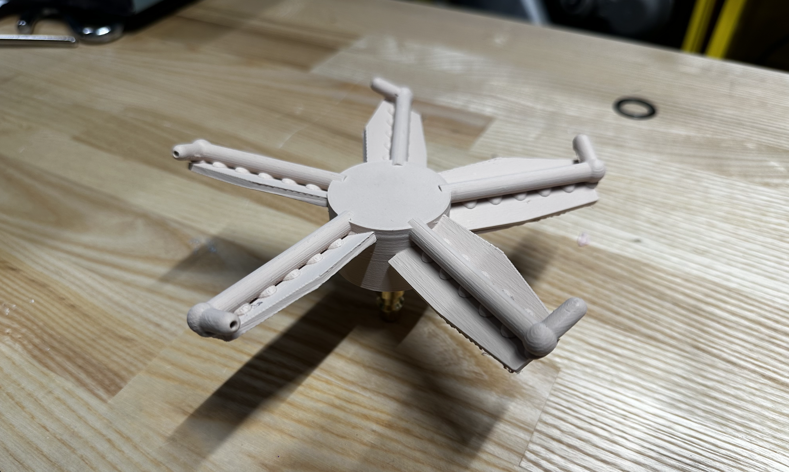
3D Printed V1 Prototype
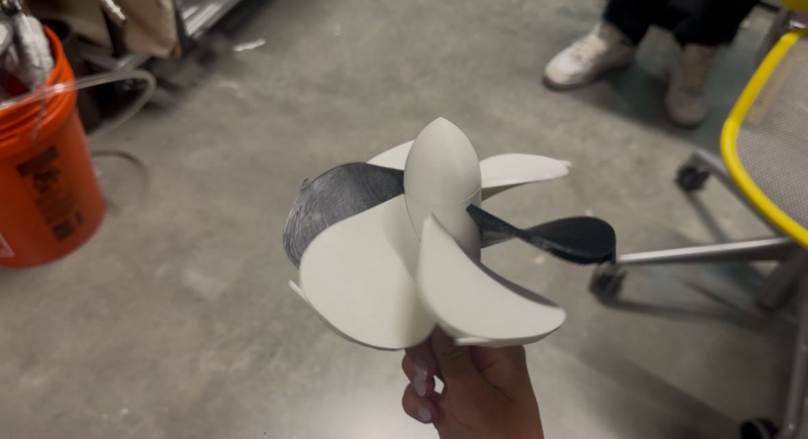
3D Printed V2 Prototype
Parallel Design Comparison
In our design process, we evaluated multiple propulsion system configurations to determine the most efficient, each with its own advantages and limitations. The three we considered included:
- Converging-Diverging Nozzle Outgassing
- Radial Outgassing from Propeller Blades
- Tesla Turbine Powered Propeller
We ruled out the CD nozzle early since our fuel cell cannot provide the steady, high-quality flow it requires, especially at our relatively low (~30 psi) and inconsistent pressure. We then prototyped both the radial outgassing and Tesla turbine designs and found that radial outgassing produced significantly more thrust and efficiency. The Tesla turbine relies on viscous effects, which are far less effective in water, and also requires tighter manufacturing tolerances. In contrast, the radial outgassing system is simpler, more robust, and performs better under low-pressure conditions, making it the most practical choice for our application. Additionally, in considering adaptability for biodegradable materials and precision manufacturing, the radial outgassing system proved to be the most viable option due to tolerance constraints.
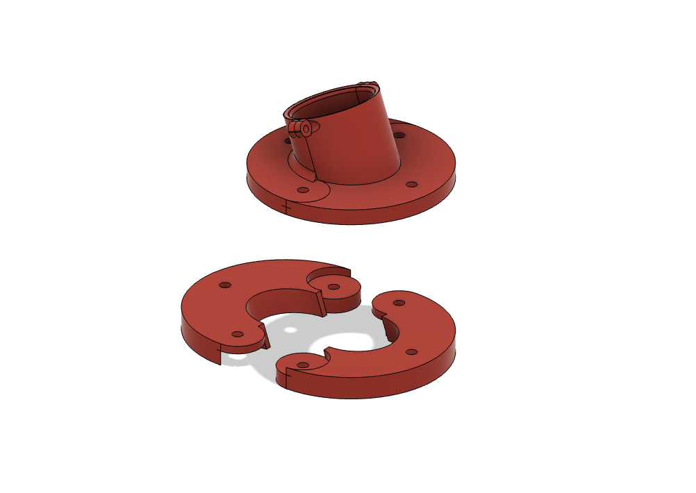
Radial Outgassing Propeller
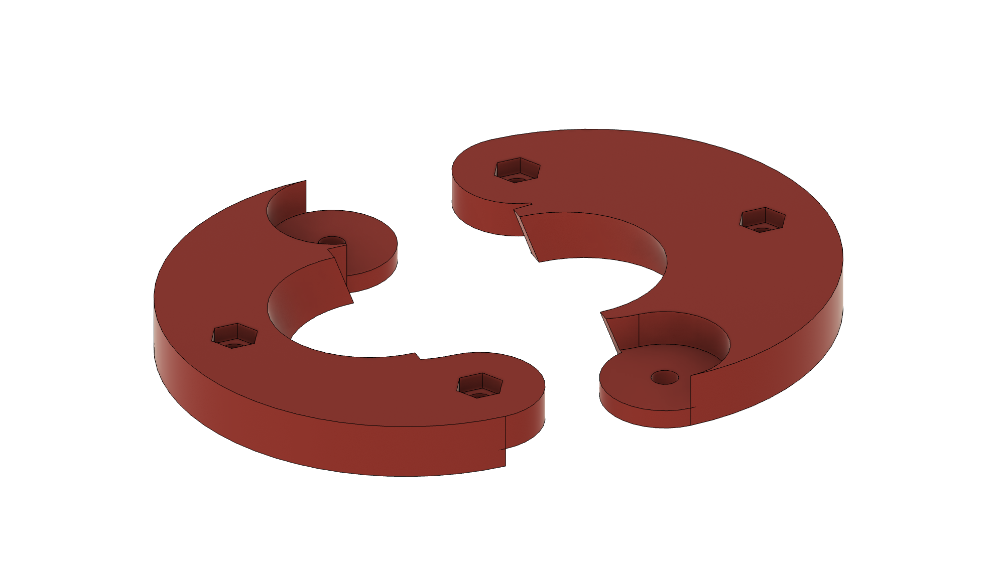
Tesla Turbine Propeller
Additional Coursework
Matlab Simulink Discrete Event Analysis Gym Entity Flow Model
Developed a discrete event analysis model in MATLAB Simulink to simulate and analyze entity flow within a gym environment. The model was used to identify bottlenecks in the system by introducing and analyzing entity flow patterns in various different forms including locker room usage (lockers, changing, or showers), and gym usage of various types including free weights, cardio, lift machines, and taking a workout class.
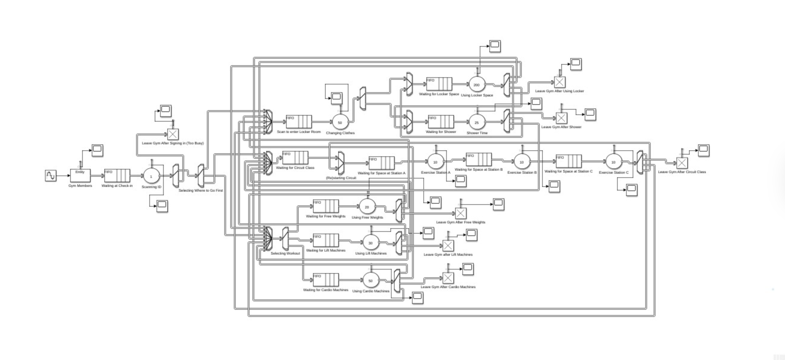
Gym Entity Flow Discrete Event Analysis
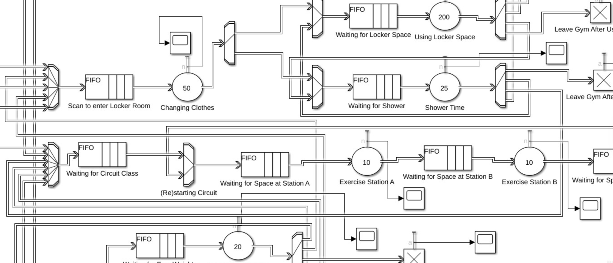
Simulink Discrete Event Analysis in Detail
Labor Burden Material (LBM) Cost Analysis for M510 Wireless Mouse
Reverse-engineered the Logitech M510 wireless mouse and developed a detailed Labor Burden Material (LBM) model, estimating costs and manufacturing processes across direct materials, labor, and overhead to identify cost-optimization opportunities without sacrificing product quality.
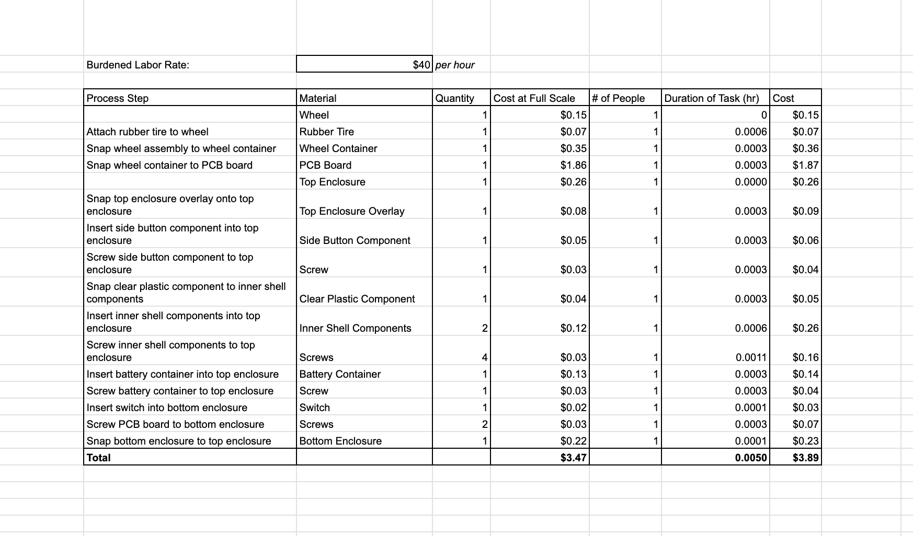
LBM Cost Analysis Spreadsheet for M510 Wireless Mouse
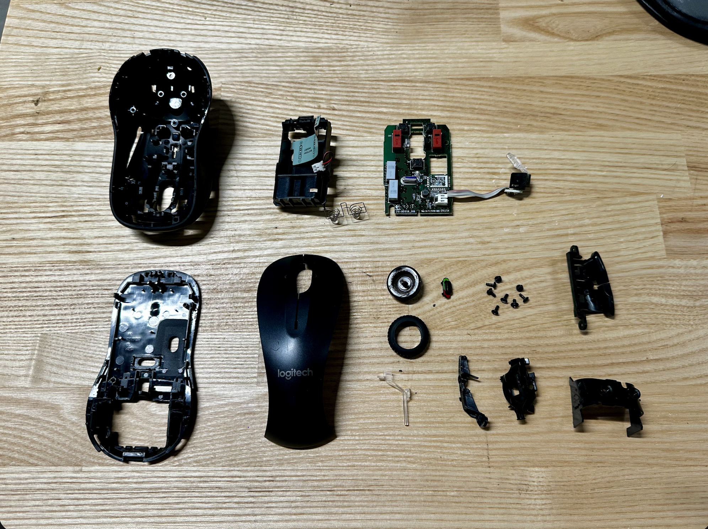
Deconstructed M510 Wireless Mouse